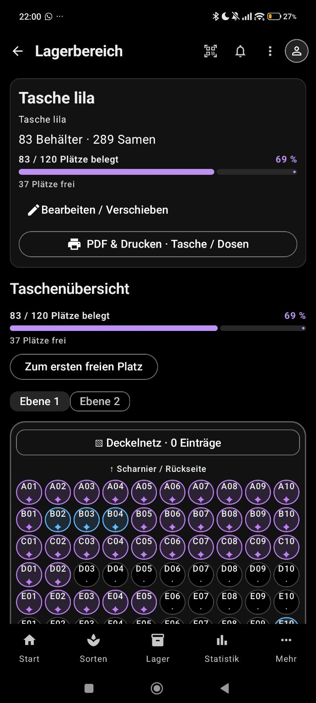
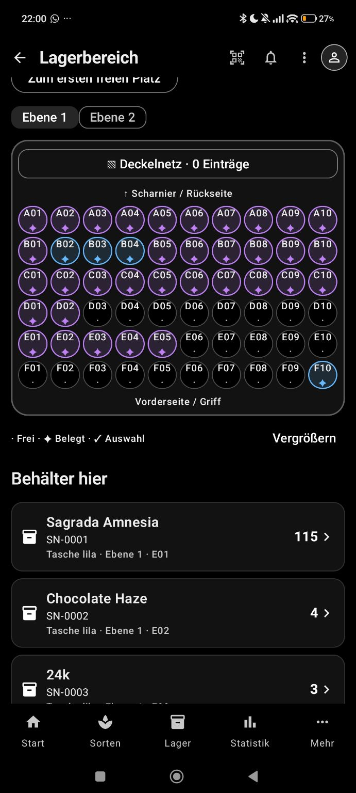
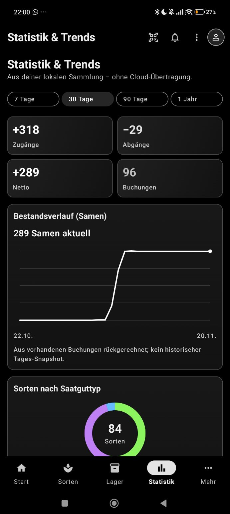

Sortenkatalog
Sorten, Breeder und Genetik im Blick.
SORTEN · LAGER · BESTÄNDE · QR
Die private Android-App für Cannabis-Samensammlungen: Sortenkatalog, Lagerverwaltung, Bestände und QR-Etiketten – übersichtlich und lokal nutzbar.








Originalansichten aus SeedNest · 01 / 10
Sorten, Breeder und Genetik im Blick.
Schrank, Tasche, Ebene und Platz.
Zuordnen, wiederfinden und scannen.
Mengen, Bestände und Planung.
Übersicht über Sorten und Lager.
Daten sichern und wiederherstellen.
Für die strukturierte Verwaltung privater Cannabis-Samensammlungen, Sorten, Bestände und Lagerplätze.
Die App unterstützt Backup- und Exportfunktionen. Vor Updates empfehlen wir eine externe Datensicherung.
Auf der offiziellen Downloadseite mit Informationen zur veröffentlichten Version.